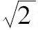
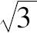
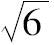

R·J·W·戴德金于1831年10月6日出生在德国的布朗斯威克（Brunswick）市，这也是卡尔·弗里德里赫·高斯（C．F.Gauss）的故乡，戴德金是J．L．U．戴德金和C．M.H.戴德金［娘家姓埃姆派里斯（Emperius）］的四个孩子中最年幼的一个．他们家是人们公认的书香门第，他在一个有进取精神的知识分子家庭中长大．他的父亲是布朗斯威克的卡罗琳学院（Collegium Carolinum）的法律教授，J.L.U．戴德金本人的父亲是著名的化学家和物理学家，戴德金的外祖父也是卡罗琳学院的教授．J.L.U．戴德金的另一个儿子长大后成了一名法官，戴德金的姐姐居理（Julie）发表过一些小说．
戴德金紧紧跟随他的兄长，并在布朗斯威克的玛提诺-卡塔琳娜（Martino-Catharineum）预科学校开始接受正规教育．起初，化学和物理是他喜爱的学科，而数学恰好是为它们服务的有用的工具．然而，到他1848年进入当地的卡罗琳学院学习时，由于在他看来化学和物理学的混乱的逻辑结构使他的学科兴趣由它们转向了数学，在他学院2年的学习期间，戴德金除了数学和最抽象的物理科学外，其他什么也不学，很快他就掌握了解析几何，微积分，以及分析学基础．
当1850年戴德金进入附近的格丁根（Göttingen）大学学习时，他是同年级成绩最为优秀的学生，戴德金很快通过了格丁根的数学课程．他听了高斯关于最小二乘法理论的讲座．50年后他还回忆起这是他所听过的最美妙和最富数学逻辑性的课．同时在格丁根他还参加了数论讨论班，这是数学系最高级的课程．在讨论班上他遇到了稍微年长的本哈德·黎曼（Bernhard Riemann），戴德金成了他的挚友．在高斯指导下，1852年春戴德金完成了关于欧拉积分理论的博士论文，他是高斯的6个博士生中的最后一个．
虽然他获得了博士学位，但戴德金认为他所接受的数学教育还不完整，在他参加获得大学讲师资格的考试前他花了两年时间去听课以弥补他认为的知识上的缺陷．当然，他非常成功地获得通过，使他作为编外讲师（Privatdozent）在格丁根取得一个普通的教师职位，给大学生讲授几何和概率论．
1855年高斯逝世，戴德金认为这是特别巨大的损失，但是戴德金的损失很快由于他与高斯的继任者，彼得·古斯塔夫·勒荣·狄利克雷（Peter Gustave Lejeune Dirichlet）极其满意的合作而弥补．虽然他本人是数学系的一个教员，戴德金并不为听狄利克雷的课感到后悔，狄利克雷的讲课范围非常广泛，包括数论，位势理论，定积分及偏微分方程．他们两人关系如此紧密，以至格丁根数学界不少人开玩笑说他们是难分难舍的孪生兄弟．但是如果要说有人是戴德金的孪生兄弟，那应该是黎曼，他们确实分不开，常常花费好几个小时一起在格丁根附近的森林里边散步边讨论数学问题．当苏黎世工业大学（Zurich Polytechnic）向戴德金提供一个更好的职位时，他为离开格丁根和黎曼而痛心疾首，最后戴德金接受了在遥远的苏黎世的职位．
戴德金虽然身处瑞士，但心系德国．当1859年黎曼被选为柏林科学院院士时，戴德金立即就此机会陪同他的朋友访问柏林，事后来看这是明智的决定．在柏林他遇到德国数学界的领袖人物：库麦（Kummer），克罗内克（Kronecker），特别是外尔斯特拉斯（Weierstrass）．这些交往富有成效．1862年，他们为戴德金在布朗斯威克工业大学（它的前身是卡罗琳学院）安排了一个职位，戴德金返回了他的父亲曾在那里任教的母校．虽然在以后的岁月里有一些更有声望的职位向他提供，但戴德金觉得在他的故乡非常满足而从未改换其他职位．
在苏黎世的第一年戴德金讲授微分学课程，引起了他对数学基础的兴趣．随着课程的展开，他认识到他不能向他的学生对组成实直线的实数连续统给出坚实的理论基础，他着手弥补这个缺陷．14年后，他发表了他的经典著作连续性与无理数（1872），给出实数连续统的第一个严格的基础．该文与他的文集数的性质和意义一起汇编在本书中．
实直线的性质甚至从公元前5世纪毕达哥拉斯发现2的无理性起就一直困扰着数学家．回顾了数学的发展后，戴德金认识到逐次地将一类数扩充到以它们作为一个部分的更大的一类数．首先，（正）整数1，2，3，…，扩充为整个整数类：正整数，零，负整数．负整数的数学运算可以通过正整数来表达，然后整数扩充为有理数，而它们是有理数的一部分．其后不久，戴德金的导师高斯将实数扩充为具有实部和虚部的复数．
戴德金用分割的概念作为整个实直线，有理数和无理数在有理数中的基石．他开始注意到每个有理数a把有理数集合分划为两个类：
此外，每个属于A1的有理数小于每个属于A2的有理数．于是借助序关系小于／大于，有理数a将所有有理数分割为互相分离的不同的两类数．
戴德金认为可以在有理数中产生许多其他的分割，例如，2将有理数分割为两类[1]：
在此再一次地，每个属于A1的有理数小于每个属于A2的有理数．类似的，π可以通过将有理数分割为下列两类来定义：
其中，每个属于A1的有理数小于每个属于A2的有理数．
给出了分割的例子后，戴德金推广了这个概念，于是任何一个无遗留地把所有有理数分成两个集合A1和A2，使A1的每个成员小于A2的每个成员的划分，定义一个等同于一个实数的分割，如果这个等同的实数不是有理数，如同定义

的分割的那种情形，那么它必定是无理数．通过分割定义了实数后，因为加减法算术运算保持了正有理数中的小于／大于关系，所以戴德金接着证明实数的算术恰好与我们所希望的完全一样．例如，考虑由和

产生的分别划分为集合A1和A2以及B1和B2的分割．取A1中的任何一个有理数及B1中的任何一个有理数．它们的乘积将小于A2中的任何一个有理数与B2中的任何一个有理数的乘积，并且这个分割对应于
，恰好是我们所想要的．戴德金经常在夏季到瑞士或蒂罗尔（Tyrolean）[2]的阿尔卑斯山区度假．在1874年的假日，他在英特莱肯市（Interlaken）第一次遇见乔治·康托尔（Georg Cantor）．戴德金对连续统的开创性的分析是康托尔关于超限数的革命性工作（本书将在后文介绍）的灵感的主要源泉，正是通过18世纪70～80年代康托尔与戴德金的通信历史学家才能理解康托尔思想的发展．
当格丁根在数学上超过柏林的时候，布朗斯威克工业大学还是一个死气沉沉的学校．在这里，戴德金从来没有带过博士生，但布朗斯威克工业大学的一个不起眼的请求使他获得监管出版两本数学名著的机会．1863年，主要根据他所作的笔记，出版了狄利克雷的数论讲义．到1894年，出了3个以上的版本．当黎曼过早地离世时，他自行决定出版他的朋友的选集，他的朋友去世10年后这个经典著作才问世．他还监管出版了他的导师卡尔·弗里德里赫·高斯的选集．
在布朗斯威克，戴德金还被要求担任工业大学的领导职务（1872~1875年）．虽然他不喜欢行政事务，但戴德金为这个事实感到高兴：他获得了他的父亲及他的外祖父以前曾拥有过的地位．戴德金于1894年从他的大学职位退休，虽然他已退休，但还继续讲课直到他迈入70高龄，与许多数学家不一样，他喜欢讲课．
戴德金一生获得过许多荣誉，第一个荣誉来自格丁根，他于1862年当选为它的科学院的通讯院士．1880年从柏林科学院，1902年从巴黎科学院和罗马科学院分别获得类似的荣誉称号．1902年在他获得格丁根大学博士学位50周年纪念日他被授予多个名誉博士称号．
戴德金安于在布朗斯威克的生活，终生未婚，一直与他的姐姐居理生活在一起直到她1914年去世．他在经受短暂的病痛折磨后于1916年2月12日逝世．虽然当时欧洲处于第一次世界大战的中期，法国和英国的数学家还是为他的去世致哀，他们知道最后一个与伟大的高斯直接连接的纽带已经丧失．
[1]原书下面两段有误，已改．
[2]即Tyrolien，奥地利的西部地区．